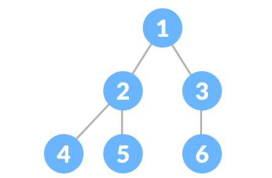

DSA
1.A) 6 Marks
i) Illustrate an algorithm to count number of nodes in singly linked list.
Step 1: if head is NULL then
print("List is empty")
else
Step 3: q = head AND counter = 0
Step 2: counter = counter + 1
Step 4: Go to next_node
Step 5: if q != NULL
Repeat from Step 3
Step 6: Return counter
ii) Interpret following terminologies i) Node ii) Root iii) Leaf Node

- i) Node: A node is a basic unit of a data in a graph, tree or other data structure. It can contain a value or data, as well as a reference to other nodes. In a graph, a node represents a vertex or a point and it can be connected to other nodes with edges.
- ii) Root: In a tree data structure, the root is the topmost node that is the ancestor of all other nodes in the tree. It is the node from which all other nodes can be reached by following a path down the tree. The root node does not have any parent.
- iii) Leaf Node: In a tree data structure, a leaf node is a node that has no children. It is a node that is located at the bottom of the tree and does not have any descendant nodes. A leaf node is also called a terminal node.
iii) Summarize any 3 properties of B-Tree
- Multi-node structure: B-Trees are multi-node data structures, which means that the keys are not stored in a single node but are distributed among multiple nodes. This allows for efficient searching, insertion and deletion operations.
- Balancing: B-Trees are self-balancing data structures. They automatically adjust their structure to maintain a certain level of balance, which ensures that the height of the tree remains small, and the search, insertion and deletion operations are performed efficiently.
- Large number of keys: B-Trees are designed to efficiently store and retrieve a large number of keys. Each node in a B-Tree can store multiple keys, which allows for a high degree of parallelism in searching, insertion and deletion operations. This makes B-Trees particularly useful in databases and file systems where large amounts of data need to be stored and retrieved efficiently.
1.B) 4 Marks
i) Describe Linked List with types.
- Singly Linked List: It is the simplest type of linked list in which every node contains some data and a pointer to the next node of the same data type. The node contains a pointer to the next node means that the node stores the address of the next node in the sequence. A single linked list allows the traversal of data only in one way.
- Doubly Linked List: A doubly linked list or a two-way linked list is a more complex type of linked list that contains a pointer to the next as well as the previous node in sequence, Therefore, it contains three parts of data, a pointer to the next node, and a pointer to the previous node. This would enable us to traverse the list in the backward direction as well.
- Circular Linked List: A circular linked list is one in which the last node contains the pointer to the first node of the list. While traversing a circular linked list, one can begin at any node and traverse the list in any direction forward and backward until reaching the same node where it started. Thus, a circular linked list has no beginning and no end.
ii) Illustrate algorithm to display data from circular linked list.
Step 1: SET CURR = HEAD
Step 2: DO
Step 3: PRINT CURR -> DATA
Step 4: SET CURR = CURR -> NEXT
Step 5: WHILE (CURR != HEAD)
Step 6: EXIT
- Step 1: Initialize a pointer, CURR, and set it to the head of the circular linked list.
- Step 2: Iterate through the list by following the next pointer of each node until CURR is equal to the head of the list again.
- Step 3: Print the data of the current node.
- Step 4: Move the CURR pointer to the next node by following the next pointer.
- Step 5: Repeat steps 2-4 until CURR is equal to the head again, indicating that all nodes have been visited.
- Step 6: Exit
iii) Summarize note on Binary Tree
- A binary tree is a tree data structure.
- Each node in a binary tree has at most two children.
- The two children are referred to as the left child and right child.
- The topmost node in a binary tree is called the root.
- The left and right children can themselves be binary trees, creating a hierarchical structure.
- Binary trees are often used for searching and sorting algorithms.
- They are also used in data compression and computer science.
- They can be implemented using pointers in programming languages like C and C++.
Types of Binary Tree

- Full Binary Tree A full Binary tree is a special type of binary tree in which every parent node/internal node has either two or no children.
- Perfect Binary Tree A perfect binary tree is a type of binary tree in which every internal node has exactly two child nodes and all the leaf nodes are at the same level.

- Complete Binary Tree A complete binary tree is just like a full binary tree, but with two major differences

- Skewed Binary Tree A skewed binary tree is a pathological/degenerate tree in which the tree is either dominated by the left nodes or the right nodes. Thus, there are two types of skewed binary tree: left-skewed binary tree and right-skewed binary tree.
- Balanced Binary Tree It is a type of binary tree in which the difference between the height of the left and the right subtree for each node is either 0 or 1.
2. 5 Marks
i) Summarize note on Tranversal of Binary Tree.
Traversing a binary tree involves visiting each node in the tree in a specific order. There are three common ways to traverse a binary tree:
- In-order traversal: Left Root Right In this method, the left subtree of a node is visited first, then the node itself, and finally the right subtree. This method visits nodes in ascending order for a binary search tree.
- Pre-order traversal: Root Left Right In this method, the node is visited first, then its left subtree, and finally the right subtree. This method is used to create a copy of the tree.
- Post-order traversal: Left Root Right In this method, the left subtree is visited first, then the right subtree, and finally the node itself. This method is used to delete the tree.
More Info https://www.youtube.com/watch?v=-b2lciNd2L4
ii) Discover short note on DFS along with its advantage and disadvantage.
Depth-first search (DFS) is an algorithm for traversing or searching tree or graph data structures.
- It starts at the root node (or some arbitrary node) and explores as far as possible along each branch before backtracking.
- The algorithm uses a stack data structure to keep track of the nodes to visit next.
- The algorithm starts by pushing the root node to the stack.
- Then, it pops a node from the stack and visits it.
- If the visited node has any unvisited children, it pushes them to the stack.
- This process continues until the stack is empty or the desired node is found.
- DFS visits the nodes as deep as possible before backtracking to visit the next branch
- DFS can be implemented in both recursive and non-recursive way
- DFS is not guaranteed to find the shortest path to a node
- DFS can be used to solve problems like finding the strongly connected components in a directed graph, Topological sorting, solving puzzles like mazes and Sudoku, and finding the path in a maze
- DFS can also be used to detect cycle in a graph and solving problems like finding the path between two nodes in a graph.
Advantage
- It is simple and easy to implement.
- It can be used to solve many problems like finding the strongly connected components in a directed graph, Topological sorting, solving puzzles like mazes and Sudoku, and finding the path in a maze
- It can be implemented in both recursive and non-recursive way
Disadvantage
- It requires a lot of memory to store the stack and the visited nodes.
- It may take a long time to visit all the nodes in a large graph.
- It is not guaranteed to find the shortest path to a node.
- It is not suitable for graphs with large number of edges and vertices.
- It is not efficient for finding the shortest path in a weighted graph.
More example: https://www.youtube.com/watch?v=iaBEKo5sM7w
3. 5 Marks
i) Explain Doubly Linked List. Write an algorithm to create Doubly Linked list.
A doubly linked list is a variation of the linked list data structure where each node contains an additional pointer, typically called previous pointer, that points to the previous node in the list. This allows for a more efficient traversal of the list in both directions, as opposed to a singly linked list where traversal is only possible in one direction.
- Start
- Input the DATA to be inserted
- Create a new node.
- NewNode → Data = DATA NewNode →Lpoint =NULL
- IF START IS NULL NewNode→ Rpoint = NULL
- Else NewNode → Rpoint = START START→Lpoint = NewNode
- START =NewNode
- Stop
ii) Slove the following graph.